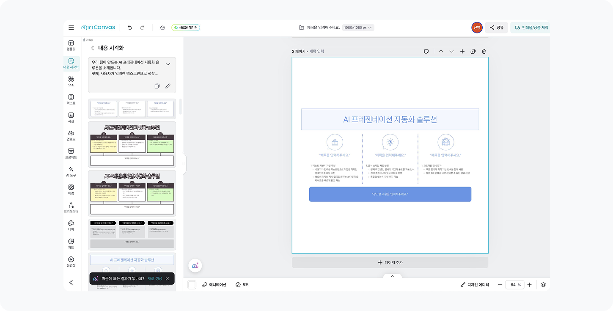
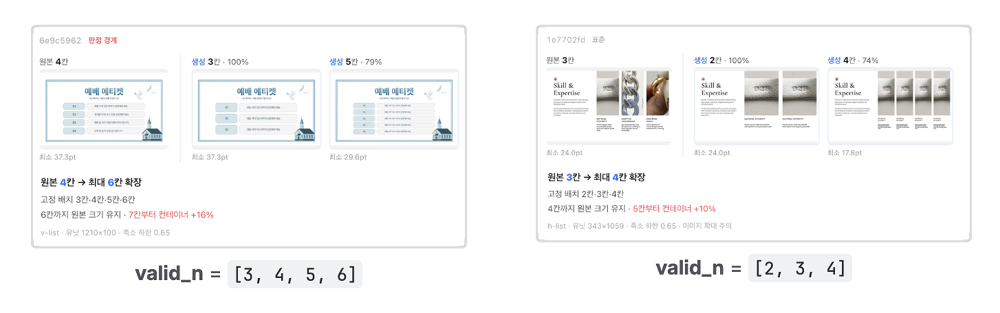
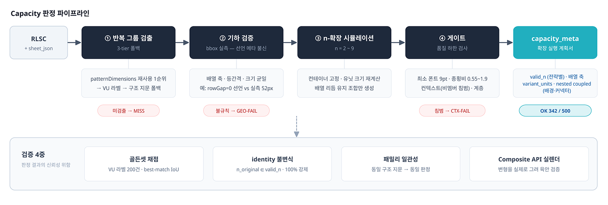
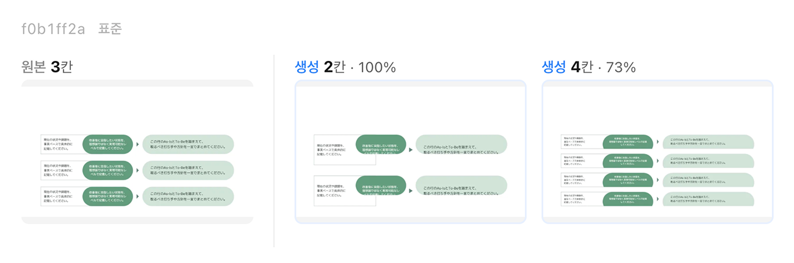
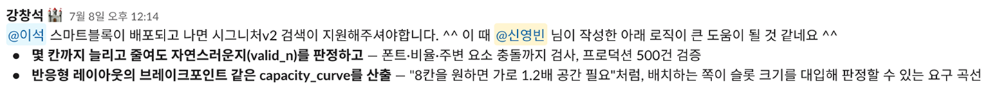

미리디 인턴 온보딩 중에 품은 의문 하나가 제품 개발 과제까지 이어진 이야기예요.
회사가 이미 보유한 자산의 잠재력을 찾아내, 프로덕트에서 바로 쓸 수 있는 형태로 만들어 넘겼어요. 새로 만드는 대신 있는 걸 쓸 수 있는 조건을 넓히는 쪽이었죠.
안 되는 이유를 물었더니 답이 없었어요
온보딩 중 ‘내용시각화’ 기능을 써봤어요. 텍스트를 넣으면 적절한 컴포넌트를 찾아 슬라이드에 채워 넣는 기능인데, 결과물이 아쉬웠어요. 의미는 맞는데 컴포넌트 완성도가 낮거나 페이지 스타일과 겉돌았거든요.

처음엔 컴포넌트 풀이 부족한 줄 알고 DB를 직접 열어봤어요. 예상과 정반대로 완성도 높은 자산이 이미 아주 많았어요.
원인은 매칭 구조였어요. 기존 자동 배치는 콘텐츠 개수와 컴포넌트 칸 수가 정확히 같을 때만(1:1) 동작했어요. 실제로는 칸 수를 조절할 수 있는 컴포넌트인데도 시스템이 고정 크기로 판단해 후보에서 빼고 있었죠.
그래서 팀원분께 물어봤어요. "시각화에서 이런 이슈가 있는데, 반복 요소를 늘리면 안 되나요?"
돌아온 답은 "그건 스마트 컴포넌트가 하는 일이고, 우리는 그렇게 늘리지 않아요"였어요. 그래서 다시 물었어요. 왜 안 하는지요. 답이 없었어요. 기술적으로 막혀서도, 시도했다가 실패해서도 아니었어요. 아무도 그 방향을 검토한 적이 없었던 거예요.
컴포넌트를 더 만드는 것보다,
기존 컴포넌트가 쓰일 수 있는 범위를 넓혀야 하지 않을까?
컴포넌트를 고정된 결과물이 아니라 반복 요소의 개수를 조절할 수 있는 구조로 보기로 했어요. 디자인을 훼손하지 않고 수용할 수 있는 콘텐츠 개수의 범위, 이걸 Capacity라고 정의했어요.

LLM 대신 규칙으로 풀었어요
팀에서는 LLM으로 반복 요소를 판별하고 있었어요. 그런데 반복 구조는 위치·크기·간격이 명확한 기하 문제였거든요. 정말 LLM이 필요한지 의문이 들었어요.
구현에 들어가기 전에 팀이 이미 가진 자산을 먼저 조사했어요. 사내에는 비슷한 분석이 여러 갈래로 있었고, 확인 없이 시작하면 같은 걸 두 번 만드는 비용이 생기니까요. 이미 있는 걸 쓰면 그만큼 검증된 기반에서 출발할 수 있고요.
그래서 순서를 이렇게 잡았어요. 이미 운영 중인 컴포넌트 패턴 분석을 1순위로 쓰고, 없으면 팀의 반복 단위 라벨을, 그것도 없을 때만 직접 구조를 비교했어요. 반복 요소를 찾았으면 그다음은 얼마나 늘릴 수 있는지를 테스트했죠.
판정을 직접 구현하면서 세 가지를 다르게 했어요.
- 좌표와 글자를 빼고 구조만 비교했어요 같은 모양이면 위치가 다르고 글자가 달라도 같은 칸으로 인식하게 했어요. 카드 하나가 몇 px 어긋났다고 다른 구조가 되면 안 되니까요.
- 주변까지 함께 봤어요 그룹만 보면 규칙적인 리스트인데, 늘리면 옆 요소와 부딪히는 경우가 있어요. 십자형 배치의 세로 3개가 대표적이었죠. 구조만 봤다면 통과시켰을 케이스예요.
- 확장 결과를 시뮬레이션했어요 칸 수를 늘리고 줄여본 뒤, 텍스트와 비율이 품질 기준을 통과하는 칸 수만 허용했어요.

사람이 라벨링한 200건 대비 정밀도 1.000, 재현율 0.932가 나왔어요. 같은 템플릿이면 96.7%가 같은 판정을 냈고요. 놓치는 건 있지만 틀린 걸 통과시키지는 않는 쪽으로 맞췄어요. 이 판정값을 받아 쓰는 곳이 검색과 변환기라서, 오탐 하나가 곧 잘못된 결과물로 이어지거든요.
- 구조가 같은 디자인에는 같은 판정이 나온다 (96.7%)
- 왜 그렇게 판정했는지 근거를 추적할 수 있다
- 9만 개 전수에 낮은 비용으로 적용할 수 있다
판정을 그려서 확인했어요
숫자로 맞다고 끝내지 않았어요. "6칸까지 가능"이라고 판정하면 실제로 6칸 변형을 만들어 합성 API로 렌더링해 눈으로 봤어요.
여기서 수치로는 안 잡히던 문제가 드러났어요. 카드는 늘어났는데 뒤의 배경판은 그대로여서 삐져나오고, 구분선이 따라오지 않고, 폰트가 무너지는 것들이었죠. 전부 판정 규칙에 되먹였어요.

품질 하한도 이렇게 정해졌어요. 처음부터 정한 숫자가 아니라 극단적으로 축소된 렌더를 직접 보고 거꾸로 정한 값이에요.
- 글자 크기 하한 · 제목 14pt · 본문 12pt · 마커 10pt
- 유닛 축소 하한 원본의 65%
- 가로세로 비 변화 0.55~1.9배 안
- 텍스트 줄 수 보존 (잘림 방지)
결과는 네 겹으로 확인했어요. 사람 라벨 대비 채점, 원본 개수는 항상 결과에 포함되는지, 같은 구조끼리 같은 판정이 나오는지, 마지막으론 직접 육안 판정을 진행했어요. 임계값을 고정 상수로 두지 않고, 렌더에서 발견한 사례를 사람이 판정해 규칙에 반영하는 절차로 관리했죠.
쓰이는 곳을 먼저 정했어요
PoC를 만들 때 이 판정값을 누가 받아 쓸지를 먼저 정했어요. 검색의 1:n 매칭, 스마트블록 변환, 품질 지표 → 이 세 소비처의 입력으로 설계했어요.
그래서 산출물은 "된다/안 된다"가 아니라 다음과 같은 정보를 담게 됐어요.
{
"verdict": "OK",
"valid_n_by_strategy": {
"container-fixed": [4, 6], // 제자리 확장
"wrap": [9] // 재편 확장
},
"capacity_curve": [ // n칸에 필요한 최소 공간
{ "n": 6, "min_container": [1489, 708], "growth": [1.0, 1.0] },
{ "n": 8, "min_container": [1787, 708], "growth": [1.2, 1.0] }
],
"coupled": ["배경판", "구분선", "연결선"], // 확장 시 함께 처리
"variant_units": ["강조 유닛"] // 복제 제외
}가능한 칸 수를 제자리 확장과 배열 재편으로 나눠 저장하고, n칸에 필요한 최소 공간을 표로 함께 줬어요. 배치하는 쪽이 슬롯 크기를 대입해 스스로 판단할 수 있게요. 함께 움직여야 하는 부속(배경판·구분선·연결선)과 복제하면 안 되는 유닛(강조 카드)도 같이 담았어요.
안 되는 이유도 남겼어요. 배열이 불규칙해서인지, 주변과 충돌해서인지, 반복 자체가 없어서인지를요. 소비처가 헛시도를 하지 않게 하려면 실패에도 이유가 붙어 있어야 했거든요.
실제 500건을 판정해보니 342건이 확장 가능으로 통과했고, 나머지는 각각의 사유로 걸러졌어요. 새 디자인을 하나도 만들지 않고 재사용 대상을 늘린 셈이에요. 제안은 팀 검토를 거쳐 제품 개발 과제로 확장됐고, 지금은 제품 적용을 위한 개발이 진행 중이에요.
여기서 프로덕션까지
결과물이 나쁘다고 해서 반드시 더 많은 데이터나 더 강한 모델이 필요한 건 아니었어요. 문제를 "자산 부족"으로 정의하기 전에 기존 자산의 가동률부터 확인해야 했어요. 여기까지가 PoC로 확인한 부분이에요.
그런데 판정이 맞는 것과 제품이 되는 건 다른 문제였어요. 남은 일을 정리해보니 정확도를 더 올리는 항목은 거의 없고, 대부분 다른 종류의 준비였어요.
- 사람 기준과 맞추기 · 디자이너 표본 리뷰로 합격률을 재고 임계값을 다시 보정
- 규모 · 9만 건 전수 판정과, 컴포넌트가 수정될 때 다시 판정하는 트리거
- 인접 시스템과의 계약 · 폰트를 축소하지 않는 현행 배치 로직과 판정 가정 맞추기
- 검증 자동화 · 사람이 보던 렌더 검증을 자동 채점으로 옮기기

여기서 배운 건 두 가지예요. 판정 로직은 혼자 만들 수 있지만, 그 값을 받아 쓸 스키마를 합의하고 버전을 유지하는 일은 혼자 결정할 수 없어요. PoC를 프로덕션으로 옮기는 힘은 알고리즘보다 이쪽에 있었어요.
그리고 하나 더 남았어요. 제품에 애정을 갖고 문제를 끝까지 파고들면, 팀이 아직 들여다보지 않은 영역이 보여요. 그 자리에서 문제나 방향을 먼저 제안하는 일이, 더 많이 만드는 것보다 팀을 더 똑똑하게 가게 만든다고 생각해요.
다음 글AI에게 자유를 주면 더 창의적일까?